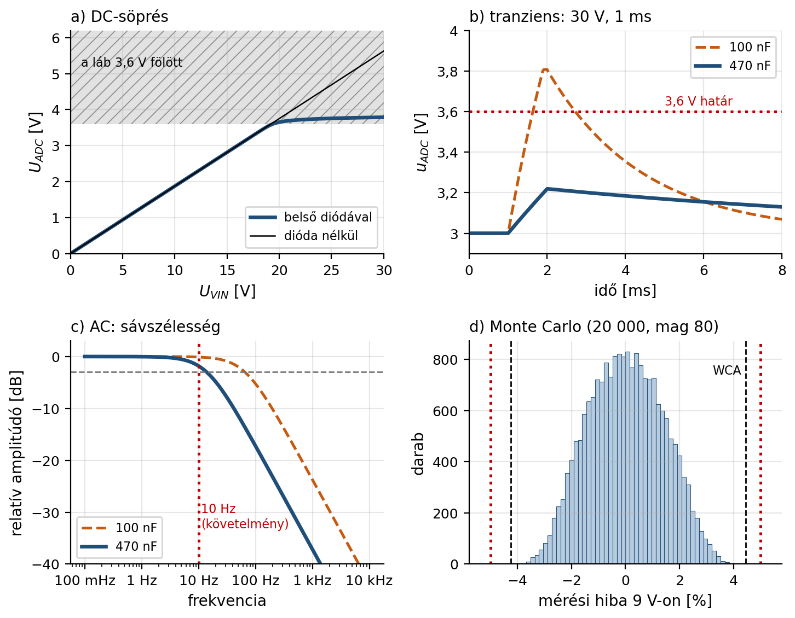

A rajz és a kényszerlista megvan. Mielőtt bárki lapot tervezne belőle, ellenőrizzük, hogy a kapcsolás a követelmények szerint viselkedik-e – nem csak egy munkapontban, hanem időben, frekvenciában és a tűrések teljes tartományában. Ennek az alfejezetnek a végére:
elkit-tel;Építünk A csomóponti potenciálok módszere és az MNA-megoldó, a Nemlineáris elemek és a munkapont, a Mérési hiba, bizonytalanság és jegyzőkönyv, a Négyszögjel-válasz és numerikus szimuláció, a Váltakozó áramú hálózatszámítás és teljesítmény, a Szűrőtervezés alapjai: rendűség, Butterworth és tűrés, Az ideális műveleti erősítő és a negatív visszacsatolás, a Derating, tűrésanalízis és megbízhatóság és a Kapcsolási rajz konvenciói és a NYÁK-tervezőnek átadott kényszerek anyagára.
A szenzormodul mikrovezérlője a bemeneti feszültséget a 130 kΩ / 30 kΩ-os osztón méri (D-05, előzetesen 100 nF szűrőkondenzátorral, Követelményektől a blokkdiagramig). Négy kérdés: mekkora a láb feszültsége a 30 V-os tesztimpulzus alatt? Mennyi áram folyik a lábba? Elég gyors-e a mérés (K-10: legalább 10 Hz)? A tűrésekkel együtt tartja-e az ±5 %-ot? Mindegyikre van kézi képlet, de a képletek feltételei egyszerre nem teljesülnek: a dióda nemlineáris, a kondenzátor késleltet, a tűrések együtt hatnak. Itt segít a szimuláció.

A szimuláció kísérlet egy modellel, nem mérés. Olyan, mint egy térkép: a térképen kiszámolt útvonal jó, ha a térkép pontos; a felbontásánál kisebb árkot viszont nem mutatja. A hasonlat ott sántít, hogy a térképen látjuk, mi hiányzik, a modellben a hiányzó parazita (egy induktivitás, egy szivárgás) semmilyen jelzést nem ad.
Az ábra b) részén a 100 nF-os változat a 3,6 V-os lábhatárt átlépi: ezt a hibát a rajz elkészülte után, de még a lap előtt találtuk meg.
| Analízis | Kérdés | A modell | elkit |
|---|---|---|---|
| DC munkapont | álló feszültségek, áramok | C szakadás, L rövidzár; nemlineáris elem Newtonnal | dc, nonlinear |
| DC-söprés | hogyan függ a bemenettől | munkapont sok bemenetre | nonlinear ciklusban |
| tranziens | időbeli viselkedés, csúcsok, beállás | időlépéses megoldás | transient |
| AC (kisjelű) | frekvenciamenet, sávszélesség | a munkapont körül linearizált hálózat | ac |
| WCA, Monte Carlo | tűrések hatása | ugyanaz a függvény sok paraméterkészletre | budget |
A WCA (worst-case analysis) a paraméterek szélső kombinációit, a Monte Carlo véletlen mintáit vizsgálja (Derating, tűrésanalízis és megbízhatóság). Az AC-analízis kisjelű: nem mutatja meg, ha egy nagy jel a diódát kinyitja.
Definíció. A szimulációs jegyzőkönyv egy szimuláció reprodukálható leírása: cél (melyik követelmény), modell és korlátai, beállítás (lépésköz, mag, kezdeti feltétel), eredmény, elfogadási feltétel, és egy kézi becslés, amellyel egyezik.
Ez a Mérési hiba, bizonytalanság és
jegyzőkönyv mérési jegyzőkönyvének megfelelője. A sor formája az
elkit.extra_elch24.Record: azonosító (SIM-…), követelmény,
mennyiség, érték, határ, módszer, korlátok. Feltétel nélküli eredmény
nem jegyzőkönyv: a „3,81 V” önmagában sem jó, sem rossz.
A szimulátor a csomóponti módszert (MNA) használja (A csomóponti potenciálok módszere és az MNA-megoldó). A diódát a Newton-iteráció linearizálja lépésenként (Nemlineáris elemek és a munkapont), amíg a megváltozás elég kicsi. Tranziensben a kondenzátort minden időlépésben egy vezetés és egy áramforrás helyettesíti; implicit Euler-lépésnél a vezetés , ahol a lépésköz (Négyszögjel-válasz és numerikus szimuláció).
Két tipikus numerikus gond:
Fontos a kezdeti feltétel is: a VIN-figyelő tesztimpulzusa 16 V-os állandósult állapotból indul, tehát DC munkapontból kell indítani, nem üres kondenzátorral.
A SPICE a legelterjedtebb áramkör-szimulátor család;
ingyenes változata az ngspice, a gyártói LTspice is SPICE-alapú
[S-NGSPICE]. A könyv referenciakörnyezetében egyik sincs telepítve: a
saját elkit-tel dolgozunk, a SPICE kitekintés. A netlista
szövegfájl (a szintaxis ellenőrizendő: az ngspice kézikönyve):
*
kezdetű sor megjegyzés;0 csomópont a föld;m a milli, a mega
Meg;.model ír le egy félvezetőmodellt, .op,
.tran, .ac az analíziseket, .end
zárja.A gyártói modell jellemzően alkapcsolás
(.subckt, a netlistában X elem), amely egy
összetett alkatrész viselkedését írja le. A IBIS-modell
(I/O Buffer Information Specification) a digitális IC kimenetét
táblázatos feszültség–áram görbékkel és felfutási adatokkal adja meg,
belső kapcsolás nélkül; jelintegritás-vizsgálathoz való. A Falstad
böngészős szimulátora szemléltetésre jó [S-FALSTAD], számszerű
bizonyítékként ne használd.
Minden eredmény csak a modell feltételei között igaz. Tipikus hiányok: ideális kapcsoló (nincs kapacitás, véges idő), hiányzó parazita (ESR, ESL, vezetékinduktivitás), szivárgás, hőmérsékletfüggés, névleges érték a legrosszabb helyett, mintamodell valós adatlap helyett.
Kézi ellenőrzés négy fogása:
Továbbvitt eredmény. A terv ellenőrzése: a követelmény dönti el az analízist (munkapont, tranziens, AC, WCA/Monte Carlo), minden futás jegyzőkönyvbe kerül modellkorlátokkal és kézi becsléssel, a rajz netlistaként is leírható. Ezt a munkafolyamatot használja a Tervezési átvizsgálás és átadás a NYÁK-tervezésnek, az 1. záróprojekt: védett tápegység 12 V-ról 5 V-ra és 3,3 V-ra, a 2. záróprojekt: érzékelő-illesztő és mérőlánc és a 3. záróprojekt: MOSFET-es meghajtó induktív terheléshez.
Adatok: kΩ, kΩ, nF, a láb belső diódája a +3V3 sínre, nyitófeszültség 0,5 V; a láb legnagyobb feszültsége V, a lábba legfeljebb 1 mA vezethető, szivárgása ±0,5 µA (mind mintaadat).
1. Munkapont (C szakadás): a Thévenin-ellenállás kΩ, az osztás . 16 V-on V.
2. Impulzus dióda nélkül: a végérték V, ms. Az 1 ms végén
Ez a 3,6 V-os határ fölött van. A diódával a csúcs V-nál megáll – még mindig sok.
3. Injektált áram tartós 30 V-nál (felső becslés): µA, jóval 1 mA alatt.
4. Mekkora kell? A csúcsra: , azaz , tehát ms, nF. A sávszélességre: Hz, tehát nF. Az ablak 158 … 653 nF; E6-ból 470 nF, mert 220 nF-nál a kerámia DC-bias-vesztesége már közel vinné a határhoz, 470 nF-nál mindkét oldalon marad tartalék.
5. Ellenőrzés 470 nF-dal: ms, csúcs V; Hz.
6. Hiba 9 V-on: az ellenállások és a ±2 %-os referencia legrosszabb esete %; a szivárgás mV a V-os jelen %. Összesen kb. % % – a szivárgás nélkül a tartalék 1,3 százalékpontnak látszott volna, vele csak 0,6.
Döntés (D-05 módosítása): nF.
A döntés a 3,3 V-os referenciára szól. A 2. záróprojekt: érzékelő-illesztő és mérőlánc később 3,0 V-os referenciára vált, ezért ott az osztó alsó ellenállása 30 kΩ-ról 27 kΩ-ra módosul (a kondenzátor marad) – a változtatás hatását ugyanezekkel a vizsgálatokkal kell újra igazolni.
DC és tranziens (a lánc modelljei az
elkit.extra_elch24-ben; elkit.nonlinear
Shockley-diódával, elkit.transient darabonként
lineárissal):
from elkit import extra_elch24 as x
for u in (9.0, 16.0, 30.0):
pin, i_d = x.vin_dc(u)
print(f"{u:4.0f} V → láb {pin:.3f} V, dióda {i_d * 1e6:6.2f} µA")
for c1 in (x.VIN_C1_ELOZETES, x.VIN_C1):
ideal = x.vin_transient(c1, diode=False).v("adc").max()
clamp = x.vin_transient(c1).v("adc").max()
print(f"C1 = {c1 * 1e9:3.0f} nF: csúcs {ideal:.3f} V (dióda nélkül; kézzel "
f"{x.vin_peak_analytic(c1):.3f} V), {clamp:.3f} V (diódával)") 9 V → láb 1.688 V, dióda -0.03 µA
16 V → láb 3.001 V, dióda -0.03 µA
30 V → láb 3.788 V, dióda 75.36 µA
C1 = 100 nF: csúcs 3.883 V (dióda nélkül; kézzel 3.883 V), 3.807 V (diódával)
C1 = 470 nF: csúcs 3.219 V (dióda nélkül; kézzel 3.219 V), 3.219 V (diódával)9 és 16 V-on a negatív diódaáram a zárt dióda szivárgása a modellben. A Shockley-modell tartós 30 V-ra 3,788 V-ot ad, a darabonként lineáris (3,8 V + 100 Ω · 75 µA) 3,807 V-ot: a kb. 20 mV eltérés a modell bizonytalansága, nem a mérésé.
AC és tűrések:
from elkit import ac, budget
f = ac.logspace(0.1, 1e4, 200)
for c1 in (x.VIN_C1_ELOZETES, x.VIN_C1):
print(f"C1 = {c1 * 1e9:3.0f} nF: f_c = {ac.cutoff(f, x.vin_ac(f, c1)):.1f} Hz")
for leak in (0.0, x.VIN_I_LEAK):
res = budget.analyze(*x.vin_error_model(9.0, leak), n=20000, seed=80)
w, m = res.wca, res.mc
print(f"±{leak * 1e6:.1f} µA: WCA {w.minimum:.2f} … {w.maximum:.2f} %; RSS "
f"±{res.rss.high:.2f} %; MC {m.minimum:.2f} … {m.maximum:.2f} %")C1 = 100 nF: f_c = 65.3 Hz
C1 = 470 nF: f_c = 13.9 Hz
±0.0 µA: WCA -3.54 … 3.71 %; RSS ±2.31 %; MC -3.43 … 3.67 %
±0.5 µA: WCA -4.25 … 4.45 %; RSS ±2.42 %; MC -3.85 … 4.17 %A jegyzőkönyv az előzetes és a végleges értékkel:
for c1 in (x.VIN_C1_ELOZETES, x.VIN_C1):
print(f"--- C1 = {c1 * 1e9:.0f} nF")
print(x.format_records(x.vin_records(c1)))--- C1 = 100 nF
jel mennyiség érték határ eredmény köv.
SIM-01 láb 16 V-nál, legrosszabb 3.05 V ≤ 3.23 V rendben K-10
SIM-02 injektált áram, tartós 30 V 75.4 µA ≤ 1 mA rendben K-06
SIM-03 lábfeszültség az impulzusnál 3.81 V ≤ 3.6 V SÉRÜL K-06
SIM-04 határfrekvencia 65.3 Hz ≥ 10 Hz rendben K-10
SIM-05 mérési hiba 9 V-on, legrosszabb 4.45 % ≤ 5 % rendben K-10
--- C1 = 470 nF
jel mennyiség érték határ eredmény köv.
SIM-01 láb 16 V-nál, legrosszabb 3.05 V ≤ 3.23 V rendben K-10
SIM-02 injektált áram, tartós 30 V 75.4 µA ≤ 1 mA rendben K-06
SIM-03 lábfeszültség az impulzusnál 3.22 V ≤ 3.6 V rendben K-06
SIM-04 határfrekvencia 13.9 Hz ≥ 10 Hz rendben K-10
SIM-05 mérési hiba 9 V-on, legrosszabb 4.45 % ≤ 5 % rendben K-10Végül a netlista, ahogy egy SPICE-ot telepítő olvasó lefuttathatná (mi nem futtattuk):
netlist = x.vin_netlist()
print(netlist.to_spice())
print("formai hibák:", netlist.check())* VIN-figyelő a szenzormodulban
* a D1 egyszerű mintamodell, nem a mikrovezérlő belső diódája
VU1 gen 0 DC 16 AC 1 PULSE(16 30 1m 1u 1u 1m 20m)
RS gen vin 2
R1 vin adc 130k
R2 adc 0 30k
C1 adc 0 470n
VU2 P3V3 0 DC 3.3
D1 adc P3V3 DMINTA
* DMINTA: mintamodell, nem konkrét alkatrész
.model DMINTA D(IS=2n N=1.8 RS=500m CJO=4p)
.op
.tran 10u 40m
.ac dec 20 100m 100k
.end
formai hibák: []adc
csomópontot. Hány elem köt rá, és melyik sorok? Utána kattints D1-re: mi
a SPICE-ban a csomópontok sorrendje a diódánál? Kulcs: anód,
katód.RS helyett M1
nevet adnál egy ellenállásnak, mit tenne a SPICE? Kulcs:
MOSFET-nek olvasná.| Tünet | Ok | Javítás |
|---|---|---|
| „A szimuláció rendben, a prototípus hibás” | hiányzó parazita vagy szivárgás a modellben | a jegyzőkönyvbe a korlátok; a fontos hatást be kell venni, vagy mérni |
| A rövid tüske nem látszik, máskor igen | túl nagy időlépés | a leggyorsabb esemény huszada; ellenőrzés felezett lépéssel |
| Hamis bekapcsolási tranziens | nulláról indított kondenzátorok | DC munkapontból indítás, vagy a kezdeti feltétel megadása |
| 1 MΩ helyett 1 mΩ a SPICE-ban | M a milli, nem a mega |
Meg |
| „Nem konvergál” | lebegő csomópont, ideális elemek | DC-út a földhöz, soros ellenállás, jobb kezdőérték |
Gyakori félreértés: „a szimuláció pontosabb, mint a kézi számítás”. A pontosság a modellé: a hat értékes jegy a 3,807455 V-ban nem mond semmit, ha a dióda nyitófeszültsége maga is ±0,2 V-ot szórhat.
X kezdetű sor és a
0 csomópont?.op.A szimuláció kísérlet egy modellel: a követelmény választja ki az
analízist (DC, DC-söprés, tranziens, AC, WCA/Monte Carlo), az eredmény
jegyzőkönyvbe kerül határral, módszerrel és a modell korlátaival. A
lépésköz, a kezdeti feltétel és a konvergencia befolyásolja az
eredményt; kézi becsléssel ellenőrzünk. A SPICE-netlista elemsorokból,
csomópontnevekből, modellekből és analízisparancsokból áll; az
elkit exportálja, a könyv SPICE nélkül is teljes. A
bemenetfigyelőnél a szimuláció határsértést talált (3,81 V a 3,6 V-os
határ fölött), ezért a szűrőkondenzátor 470 nF lett: 3,22 V, 13,9 Hz,
4,45 % hiba. Erre az átvizsgálás és a projektek építenek.
X egy alkapcsolás (gyártói modell) példánya; a
0 a föld, a referencia-csomópont.1. a) DC-söprés (vagy sarkok); b) tranziens; c) AC; d) WCA és Monte Carlo.
2. Egy lehetséges alak (a LED modellje mintaadat):
from elkit import netlist as nl
n = nl.Netlist("allapot-LED").vsource("V1", "+3V3", "0", dc=3.3)
n.resistor("R1", "+3V3", "led", 270).diode("D1", "led", "0").op()
print(n.to_spice())* allapot-LED
V1 P3V3 0 DC 3.3
R1 P3V3 led 270
D1 led 0 DMINTA
* DMINTA: mintamodell, nem konkrét alkatrész
.model DMINTA D(IS=2n N=1.8 RS=500m CJO=4p)
.op
.end3. ms; csúcs V V; Hz Hz. Mindkettő teljesül.
4. A szivárgás hibája %, a legrosszabb hiba kb. %, a pontos számítás 5,19 %: sérül az 5 %-os követelmény. Lehetőségek: kisebb ellenállású osztó (5. feladat), egypontos kalibrálás, vagy pontosabb referencia; a döntés előtt az adatlapból kell megtudni a valós szivárgást (NY-02).
5.
from elkit import budget
def hiba(r1, r2, u_ref, i_l, u=9.0):
pin = u * r2 / (r1 + r2) + i_l * r1 * r2 / (r1 + r2)
return (pin / u_ref * 3.3 / (10.0 / 53.0) / u - 1.0) * 100.0
par = [budget.Param("r1", 43e3, 0.01), budget.Param("r2", 10e3, 0.01),
budget.Param("u_ref", 3.3, 0.02), budget.absolute("i_l", 0.0, 1e-6)]
w = budget.wca(hiba, par)
rth = 43e3 * 10e3 / 53e3
print(f"hiba: {w.minimum:.2f} … {w.maximum:.2f} %")
print(f"f_c = {1 / (2 * 3.141593 * rth * 1e-6):.1f} Hz, "
f"láb 30 V-on dióda nélkül {30 * 10 / 53:.2f} V")
print(f"kikapcsolt modul, 30 V: {(30 * 10 / 53 - 0.5) / rth * 1e3:.2f} mA")hiba: -4.01 … 4.20 %
f_c = 19.6 Hz, láb 30 V-on dióda nélkül 5.66 V
kikapcsolt modul, 30 V: 0.64 mAA hiba (legfeljebb 4,2 %) és a sávszélesség teljesül; az impulzus csúcsa 1 µF-dal kézzel V; a kikapcsolt modulnál a tartós 30 V 0,64 mA-t tol a lábba, ami még 1 mA alatt van, de a tartalék kisebb, mint a 130 kΩ / 30 kΩ-os osztónál. Az osztó cseréje a D-05 új felülvizsgálatát jelentené.
6.
for method in ("trap", "be"):
for dt in (10e-6, 100e-6, 500e-6):
r = x.vin_transient(x.VIN_C1_ELOZETES, diode=False, t_end=8e-3, dt=dt, method=method)
err = r.v("adc").max() - x.vin_peak_analytic(x.VIN_C1_ELOZETES)
print(f"{method:4s} h = {dt * 1e6:3.0f} µs: hiba {err * 1e3:6.2f} mV")trap h = 10 µs: hiba -0.06 mV
trap h = 100 µs: hiba -1.39 mV
trap h = 500 µs: hiba -31.36 mV
be h = 10 µs: hiba -1.51 mV
be h = 100 µs: hiba -14.38 mV
be h = 500 µs: hiba -65.85 mVA trapézszabály hibája gyorsabban csökken a lépésközzel (a szimulátor az ugrásoknál külön kezeli a töréspontot); 10 µs-nál mindkét módszer hibája kicsi a modellbizonytalansághoz képest.